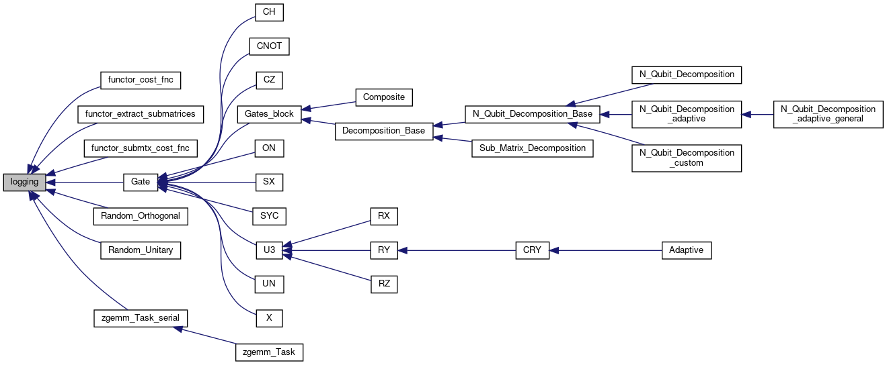

A class containing basic methods for setting up the verbosity level. More...
#include <logging.h>
Inheritance diagram for logging:

Public Member Functions | |
| logging () | |
| Nullary constructor of the class. More... | |
| void | print (const std::stringstream &sstream, int verbose_level=1) |
| Call to print output messages in the function of the verbosity level. More... | |
| void | set_verbose (int verbose_in) |
| Call to set the verbose attribute. More... | |
Public Attributes | |
| bool | debug |
| Logical variable. Set true to write output messages to the 'debug.txt' file. More... | |
| int | verbose |
| Set the verbosity level of the output messages. More... | |
Detailed Description
A class containing basic methods for setting up the verbosity level.
Constructor & Destructor Documentation
◆ logging()
| logging::logging | ( | ) |
Nullary constructor of the class.
- Returns
- An instance of the class
Definition at line 34 of file logging.cpp.
Member Function Documentation
◆ print()
| void logging::print | ( | const std::stringstream & | sstream, |
| int | verbose_level = 1 |
||
| ) |
Call to print output messages in the function of the verbosity level.
- Parameters
-
sstream The stringstream input to store the output messages. verbose_level Integer input. High level means write more to the standart output, 0 means write nothing. The default value is set to 1.
Definition at line 52 of file logging.cpp.
◆ set_verbose()
| void logging::set_verbose | ( | int | verbose_in | ) |
Call to set the verbose attribute.
- Parameters
-
verbose_in Integer variable. Set the number to specify the verbosity level for output messages.
Definition at line 82 of file logging.cpp.
Here is the caller graph for this function:

Member Data Documentation
◆ debug
| bool logging::debug |
◆ verbose
| int logging::verbose |
The documentation for this class was generated from the following files: